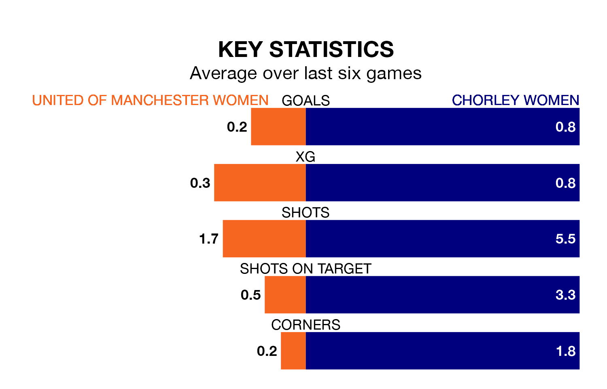

Thursday's late match sees two relegation candidates play each other, as bottom of the table United of Manchester Women host ninth-placed Chorley Women.
United of Manchester have picked up five points from their first five Women's National League Division One – North games, with one win and two draws.
That is seven points less than Chorley have collected, having won three and drawn three.
United of Manchester are in terrible form in the Women's National League Division One North, with no wins and a draw from their last six games.
And also with no wins and a draw over that period, Chorley's form is identical – they have both taken one point from 18.
In the last three years, United of Manchester and Chorley have played each other on three occasions. Chorley won one of them and they drew the other.
Their last meeting was on September 5, when Chorley won 2-1 at home.
With nine goals in 14 games so far this season, the home side are the league's lowest scorers with 0.6 goals per game. And they are conceding more than average, letting in 51 goals at a rate of 3.6 per game.
The visitors are also below average scorers, with 1.0 goal per game, compared to a league average of 1.7. They have conceded 2.2 goals per game.
United of Manchester's last match was on February 11, a 4-1 loss against Durham Cestria WFC.
Chorley lost 4-1 against Doncaster Belles Women last time out, on January 28.
Updated: 12:18 (UTC), 19/02/24